En la frecuencia.
En rotación.
Músicos que han pasado por nuestros carteles. Escúchalos en sus propios canales.
Radio digital

Una radio imaginada desde la región de Valparaíso. Juntamos música de la escena, locuciones y cortes entre pistas en forma de programas para escuchar a pedido.
Músicos que han pasado por nuestros carteles. Escúchalos en sus propios canales.